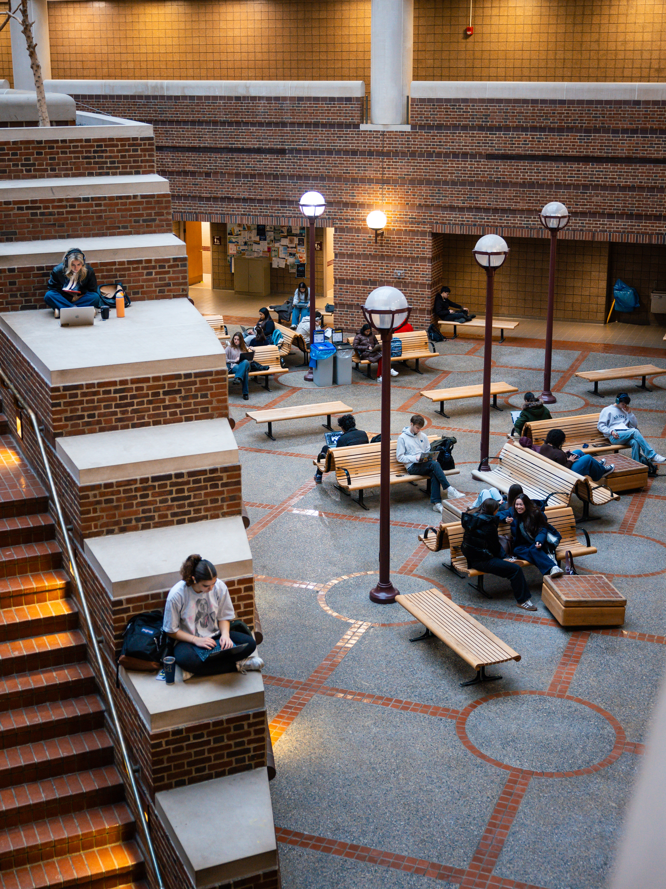

Launch Your Engaged Learning Journey
Transform your academic knowledge into real-world impact. Use this guide to understand your project context, evaluate team readiness, establish expectations, and begin a productive partnership.
Why the Work Starts Before the Project
Engaged learning at UMSI is fundamentally different from traditional classroom assignments. You are stepping out of controlled environments and into complex, unscripted ecosystems where technical solutions intersect with human lives, organizational cultures, and real community needs.
The initial phase of a project is rarely about jumping straight into execution—it is about building the foundation for ethical, sustainable engagement. Taking time to reflect on your own positionality, audit your team’s collective skills, and listen deeply to your partner’s goals prevents project failure down the line. When you ground your project in mutual respect, clear boundaries, and honest communication from Day 1, you transform a simple class deliverable into a reciprocal partnership that creates authentic value for everyone involved.

Phase 1: Preparing for the Experience
Before developing a solution, take time to understand the context, reflect on your role, and identify what you and your team still need to learn.
Approach the Work as a Collaborative Learner
Your experiences, identities, and assumptions shape how you approach a project. Rather than entering a community as an outside expert with a solution, approach the work as a collaborator: listen, ask questions, contribute your developing expertise, and learn from people who know their organization and community best.
What to Prepare
Before beginning the project
- Reflect on your position: Consider how your experiences, assumptions, and privileges may shape your perspective.
- the context: Learn about the organization, community, stakeholders, project history, and existing needs.
- Assess your team: Identify your team's skills, interests, availability, responsibilities, and areas where additional support may be needed.
- Clarify expectations: Review project requirements, roles, deadlines, constraints, and expected outcomes.
- identify open questions: Determine what you still need to learn from the partner before defining the project's scope or solution.
Questions to Consider
- What do I hope to learn from this experience?
- Who will be affected by the project and its outcomes?
- What assumptions am I making about the partner, community, or project?
- What knowledge and skills does my team already have?
- What knowledge or perspectives are missing from our team?
- How will the partner participate in project decisions?
- What would a mutually beneficial outcome look like?
Featured Preparation Resources

Phase 2: Starting the Experience
The beginning of a project sets the foundation for the partnership. Use this phase to establish clear communication, align expectations, and turn initial project ideas into a shared plan.
Build a Strong Partnership
Early conversations are an opportunity to build trust and establish how your team and partner will work together. Communicate professionally, ask questions when expectations are unclear, and involve the partner in defining the project's scope, roles, and goals.
What to Do
As you begin working with your partner:
- Establish communication: Reach out to your partner, identify points of contact, and agree on how and when you will communicate.
- Prepare for the first meeting: Create an agenda, identify key questions, and determine what your team needs to learn from the partner.
- Align on scope and expectations: Confirm project goals, intended outcomes, responsibilities, constraints, and realistic deliverables.
- Define team roles: Clarify responsibilities within your team and how decisions will be made.
- Document agreements: Record important decisions, commitments, timelines, and project boundaries so everyone has a shared reference.
Questions to Consider
- What does the partner hope to accomplish through this project?
- Are the project's goals and deliverables understood by everyone?
- What does the partner expect from our team, and what do we expect from them?
- How and how often will we communicate?
- Who is responsible for different parts of the project?
- What should we do if the project's needs or scope change?
Featured Resources & Handouts